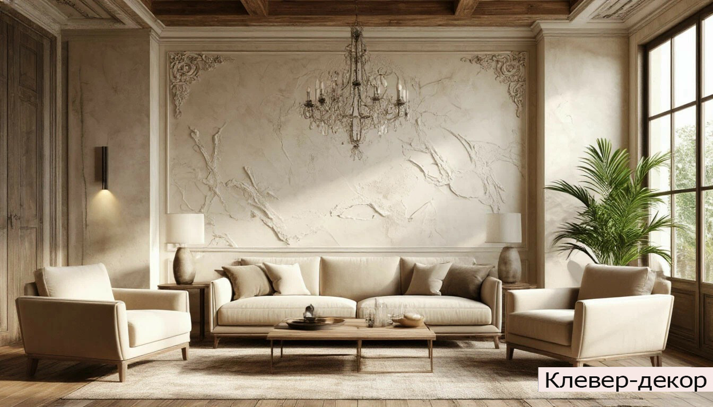

Обсуждаем задачу
Вы рассказываете о помещении, а мы предлагаем фактуры и варианты отделки.
Стоимость
Рассчитаем стоимость декоративной штукатурки честно и понятно — после бесплатной консультации и замера.
Финальная стоимость зависит от площади, сложности поверхности, выбранной фактуры и материалов. Поэтому мы не прячем цену за универсальным прайсом — сначала знакомимся с задачей и предлагаем решение под ваш интерьер.
✓ Бесплатная консультация и выезд специалиста
✓ Точный замер и расчёт до начала работ
✓ Образцы фактур и подбор оттенка
✓ Прозрачная смета без скрытых расходов

Наш подход
Вы рассказываете о помещении, а мы предлагаем фактуры и варианты отделки.
Учитываем площадь, подготовку, материалы и сроки — всё фиксируем заранее.
Выполняем работу аккуратно и передаём вам готовое пространство.